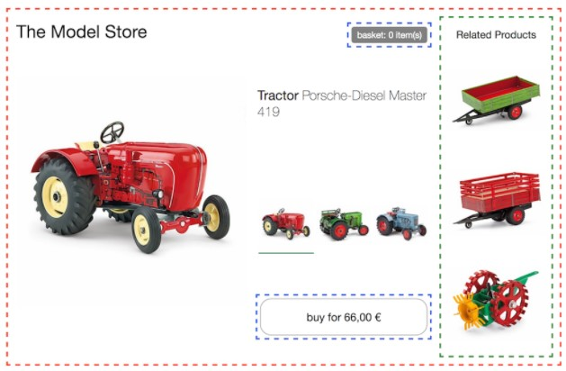

Microfrontends
P. Schmökel, B. Olleck, P. Bruchner
Microfrontends - what does that mean?
Split your UI into parts that can be developed independently
image taken from micro-frontents.org in May 2021
Microfrontends - New Constraints - New Reasons
- Time to Market!
- Faster change speed because of smaller scope
- Individual deployments of parts
- Technology: Web Components
- Long term cost reduction
- Better code/architecture through enforced splits
- Multi supplier integration in one application
- Most other reasons for Microservices (backend) apply: Replacabilty, encapsulated domain, independent deployment
Reasons for not doing Microfrontends
- Politics a.k.a. Lemmings: everybody else is doing it!
- “Everybody else” typically has different use cases!
- Short term cost reduction
- The opposite will happen!
Technology Radar: Adopt (May 2020)
Categorization: Functional - Portal
- Loosely coupled applications
- Minimal shared state
- Common menu/navigation system
- Common user context
- Typical example: Internal web workplaces

Categorization: Functional - Portlet
- Parts of an application
- Integrated display
- Some shared state
- Little data integration
- Typical example: The shopping world
Categorization: Functional - Integrated
- Functional Parts of Dialogs
- Integrated display
- Integrated state
- Integrated data
- Example: Editing a complex business object

Categorization: Backend Integration
What is the relationship betweenMicrofrontend Component and Microservice Backend?

Team Structure

Source: https://micro-frontends.org/ April 2019
Microfrontend Technology Alternatives
- Separate pages & navigation by URL
- not "Microfrontend", but sometimes good enough
- <iframe>
- good for legacy apps that do not play well with others
- Deployment Monolith
- separate development of modules, integrated build and deployment
- Web Components
- the standard for modern web frameworks
WebComponents

taken from webcomponents.org in September 2020
Template
<template id="template">
<p style="font-size: 5rem">Do you remember handlebars.js?</p>
</template>- declare fragments of HTML that can be cloned and inserted in the document by script
-
Try out by pasting this in Chrome dev console
document.querySelector('section.present').appendChild( document.querySelector('#template').content.cloneNode(true) )
Do you remember handlebars.js?
Custom Elements
class HelloParagraph extends HTMLElement {
constructor() {
super();
this._firstname = 'Otto';
}
static get observedAttributes() { return ["firstname"]; }
attributeChangedCallback(name, oldValue, newValue) {
this._firstname = newValue;
this.render();
}
connectedCallback() {
this.render();
}
render() {
this.innerHTML = `<p>Hello ${this._firstname}!</p>`;
}
}
customElements.define('hello-paragraph', HelloParagraph);
- Provide a way for authors to build their own fully-featured DOM elements.
-
Try out by pasting this in Chrome dev console
document.querySelector('section.present').appendChild( document.createElement('hello-paragraph') ) document.querySelector('hello-paragraph').setAttribute('firstname', 'Karl');
Custom Elements Pitfalls
- JavaScript scope is still global!
- Some other things are also still shared:
- window. & document.
- Progressive Web APIs, e.g. local storage
- Namespace of custom elements
Shadow Dom

taken from developer.mozilla.org/ in August 2019
let shadow = elementRef.attachShadow({mode: 'open'});
let shadow = elementRef.attachShadow({mode: 'closed'});
- Property
modecontrols whether or not the shadow tree can be accessed by JavaScript from outside.
Shadow Dom Example
H1 in DIV inside the page
H1 in DIV inside the page - this will be replaced by shadow
function createDivWithP() {
var div = document.createElement('div');
div.classList.add('ClassOfDiv');
div.innerHTML = 'text in div'
+ 'text in p
';
return div;
}
// add child without shadow dom
document.getElementById('outside').appendChild(createDivWithP());
// add child with shadow dom
var inside = document.getElementById('inside');
var insideShadow = inside.attachShadow({mode: 'open'});
insideShadow.innerHTML = 'Inside the shadow
';
insideShadow.appendChild(createDivWithP());
var styleInsideShadow = document.createElement('style');
styleInsideShadow.textContent =
'.ClassOfDiv {'
+ ' color: red;'
+ '}'
+ 'body {'
+ ' background-color:red;'
+ '}';
insideShadow.appendChild(styleInsideShadow);
Shadow Dom Pitfalls
- There are some features ... or are they bugs?
- Fonts are global
- 'inheritable styles' leak - reset with 'all: initial' may be good.
- Automated UI-Testing: Find Elements
- Open Shadow: You need to combine queries with the 'shadowRoot' in between.
- Closed Shadow: You're out of luck (unless you can hack something)
Combine Custom Elements and Shadow Dom
customElements.define('hello-paragraph', class extends HTMLElement {
constructor() {
super();
const shadowRoot = this.attachShadow({mode: 'open'});
shadowRoot.innerHTML = `
<style>...</style>
<div id="tabs ">...</div>
<div id="panels ">...</div>
`;
}
...
});
ES Modules
<!-- index.html -->
<hello-paragraph></hello-paragraph>
<script src="main.js " type="module "></script>
// main.js
import {HelloParagraph} from './hello-paragraph.js';
customElements.define('hello-paragraph', HelloParagraph);
// hello-paragraph.js
export class HelloParagraph extends HTMLElement {
// ...
}
- This is what we did to showcase CustomElements a few slides back.
Angular & web components

Angular Elements compiles Angular components as CustomElements.
@Component({
selector: 'app-root',
template: `some irrelevant stuff here
`,
})
export class AppComponent {
constructor(injector: Injector) {
// Convert `FancyTestComponent` to a custom element.
const fancyTestElement = createCustomElement(FancyTestComponent, {injector});
// Register the custom element with the browser.
customElements.define('my-fancy-test', fancyTestElement);
}
}
Integration of existing custom elements in Angular
- Get the code
- install web components library (or API/type-definition of it)
- or include js-url in your main page
- introduce Custom Elements to app modules
@NgModule({ ... schemas: [CUSTOM_ELEMENTS_SCHEMA] - use the custom elements in your html
Sample project: webcomponents-example
Why do we need this?
- Move closer to HTML standards
- Integrate with different technologies
- Go for Microfrontend application landscapes
- Enable Lazy Migrations
- Develop Design Systems
Pitfalls (1) Concerning Angular
- Bootstrap of Angular may happen multiple times
-
Caching of your sources
- For usage purposes stripping the hash from the filenames is better - but that hurts with caching
-
Services
- Services are not shared with host application - extra work necessary
- Global service lifetime - may keep obsolete stuff in memory
- Zone.js should be shared when running separate webcomponents in Angular with shared services
- or even be without zone.js...
Pitfalls (2) Concerning Angular
- Angular build result must be scoped (e.g. using ngx-build-plus)
- Namespacing of custom elements
- Angular Elements only support @Input and @Output, no public method calls. Workaround needed like element.ngElementStrategy.componentRef.instance.yourMethod().
- @Input data may not be filled before first lifecycle calls, so use ?. (or if ...)
-
@Output event data is wrapped in the browser's custom event
- access data using $event.detail
- Be wary of unexpected type changes to "string"
Pitfalls (3) Overall
-
Some browser features are not scoped or behave 'interestingly'
- progressive web APIs, shadow dom "leaks"
-
E2E-Testing requires some adjustments with shadow dom
- Queries to find elements will no longer work directly